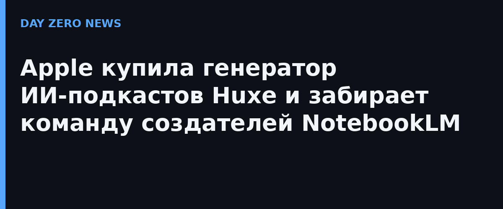

В публичном реестре поглощений Еврокомиссии (по правилам Digital Markets Act) обнаружилась сделка Apple с израильско-американским стартапом Huxe: компания получила право сделать предложения работы сотрудникам и неэксклюзивную лицензию на интеллектуальную собственность Huxe. В реестре дата сделки — июнь 2026-го, но широкой публике её рассказали только сейчас. Отдельного официального анонса не было ни от Apple (та обычно и не анонсирует мелкие поглощения), ни от Huxe.
Стартап основали в конце 2024 года трое выходцев из команды Google NotebookLM: Раиза Мартин (в прошлом лид проекта), дизайнер Джейсон Шпильман и Стивен Хьюз. Привлечено — 4,6 млн долларов. Главная фича приложения: ИИ генерирует целый аудио-подкаст по одному вопросу — два голосовых ведущих обсуждают тему, а слушатель может прервать их и попросить пояснение или сменить направление. Ещё Huxe умел голосом пересказывать выбранные новости и «сводку дня» из почты и календаря. В мае 2026 года команда объявила о закрытии продукта — теперь ясно, куда она делась.
Apple последние годы последовательно прокачивает своё приложение Podcasts: транскрипты, веб-версия, видеоподкасты. Технология генерации разговорного аудио и команда, собравшая NotebookLM, ложатся в этот курс идеально — вплоть до ИИ-ведущих внутри Apple Intelligence. Формулировка «неэксклюзивная лицензия», а не покупка, юридически оставляет Huxe отдельно от Apple — но по сути это поглощение: на LinkedIn у стартапа всего около пяти сотрудников, и никто из них не «перешёл в другие компании».
Такие «тихие» сделки — основной способ, которым Apple строит ИИ: за последние годы куплено больше трёх десятков ИИ-компаний, почти без пресс-релизов. Реестр DMA — редкий случай, когда такая сделка становится публичной: закон ЕС обязывает крупные платформы декларировать поглощения. Так что если в следующем обновлении Apple Podcasts появится сгенерированная голосами сводка ваших дней — теперь вы знаете, кто за это отвечает.